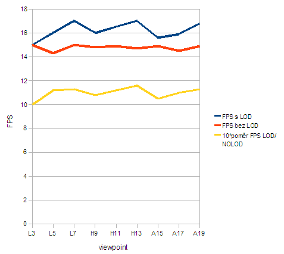

| Viewpoint | FPS s LOD | FPS bez LOD | pomìr FPS LOD/NOLOD |
|---|---|---|---|
| Labut-FPS #3 | 15,0 | 15,0 | 1,00 |
| Labut-FPS #5 | 16,0 | 14,3 | 1,12 |
| Labut-FPS #7 | 17,0 | 15,0 | 1,13 |
| Horska_draha-FPS #9 | 16,0 | 14,8 | 1,08 |
| Horska_draha-FPS #11 | 16,5 | 14,9 | 1,12 |
| Horska_draha-FPS #13 | 17,0 | 14,7 | 1,16 |
| Autodrom-FPS #15 | 15,6 | 14,9 | 1,05 |
| Autodrom-FPS #17 | 15,9 | 14,5 | 1,10 |
| Autodrom-FPS #19 | 16,8 | 14,9 | 1,13 |
Je vidìt, že s pøibývající vzdáleností, jak klesá míra zobrazených detailù, se výpoèty stávají svižnejšími. Pøesto tento zisk není pøíliš dramatický.
Zajímavé by bylo porovnat výkonový zisk oproti øešení pøedchozí úlohy, kde není použito tolik prototypù pøípadnì tolik DEF/USE.
